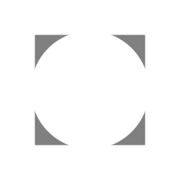
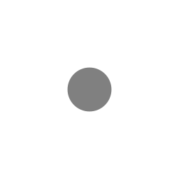

K-Space shutter

To further reduce scan time in 3D acquisition techniques the corners of K-space can be skipped. Only skipping the corners can be hardly noticed in the images. Applying larger shutters result in loss of spatial resolution and introduces ringing artifacts.
The blue parts in this image represent the corners with a combined high phase encoding and high slice encoding as if it was scanned in a 3D acquisition. A small shutter such as shown here comes more or less for free. The missing data hardly influences the image quality. When the shutter becomes a circle smaller than K-space, loss of resolution occurs and ringing appears.
These truncation artifacts can be solved by applying a filter. This will however decrease the signal intensity of the high frequency lines that contain spatial information. The resolution of the image will get even worse.
Inner shutter

Applying an inner shutter illustrates the importance of acquiring the center portion of K-space. By not scanning this part the information about the rough outline of the image is gone. What's left is information that only contains the high spatial frequencies that contribute to the resolution of the image.
The only true application of applying an inner shutter is the key-hole technique. With dynamic scanning using key-hole, the outer part is scanned less frequently than the center part. The benefit is that shorter dynamic scan times can be used as spatial information is shared over multiple dynamic images.